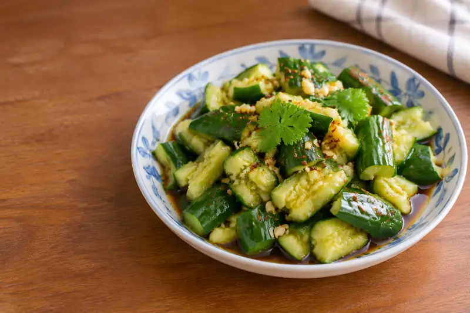

Vegetable素菜 · Chinese home-style家常
Smashed Cucumber Salad拍黄瓜
A no-cook side that appears on northern Chinese tables almost daily. Smashing rather than slicing gives rough surfaces that hold the dressing; a little salt draws out water first, then garlic, vinegar and sesame oil make it crisp and bright.不开火的凉菜，北方餐桌上几乎天天有。黄瓜拍裂而不是切，断面粗糙，更挂汁；先用一点盐杀出水，再拌蒜、醋和香油，清脆爽口。

Ingredients食材
- English cucumber黄瓜 400 g · 1 English cucumber (about 400 g)英国黄瓜 1 根（约 400 克）
- Salt盐 2 g · about 1/3 tsp约 1/3 茶匙
- Garlic大蒜 12 g · 4 cloves, crushed to a paste4 瓣，压成蒜泥
- Rice vinegar米醋 15 g · 1 tbsp (Chinese black vinegar is even better)1 汤匙（有镇江香醋更好）
- Soy sauce生抽 9 g · 1/2 tbsp半汤匙
- Sugar白糖 4 g · 1 tsp1 茶匙
- Sesame oil香油(芝麻油) 5 g · 1 tsp1 茶匙
Weights are as bought, before trimming or peeling. Costco pack sizes and availability vary; see each ingredient page.重量为买回来的原重（去皮去骨之前）。Costco 规格与有无随时变化，点食材名看详情。
Method做法
- Wash the cucumber and trim both ends.黄瓜洗净，切掉两头。
- Lay the flat of a knife on the cucumber and press down with your palm until it cracks.刀面平放在黄瓜上，用手掌拍到黄瓜裂开。
- Cut it on the diagonal into bite-size pieces.斜切成一口大小的块。
- Toss with the salt and leave for 10 minutes.撒盐拌匀，腌 10 分钟。
- Pour off the water that collects.倒掉腌出的水。
- Toss with the garlic, vinegar, soy sauce, sugar and sesame oil and serve.加蒜泥、醋、生抽、糖和香油拌匀即可。
Keys to success成功要点
- Rough cracked surfaces soak up more dressing than clean cuts.拍裂的断面不规则，比刀切更吸汁。
- Salting first keeps the cucumber crisp and stops it diluting the dressing.先用盐杀水，黄瓜更脆，汁也不会被冲淡。
- Best within 30 minutes; it softens as it sits.拌好 30 分钟内吃最脆，放久会软。
Common problems常见失败与补救
- Watery and bland盘底很多水、味道淡
It was not salted and drained first; salt for 10 minutes and pour off the water before dressing.没有先盐腌倒水；下次腌 10 分钟把水倒掉再调味。 - The garlic is too harsh蒜味太冲
Soak the garlic paste in a tablespoon of warm water first, or use just 2 cloves.蒜泥先用 1 汤匙温水泡一下再拌，或减到 2 瓣。
Watch it done视频参考
Titled as cold cucumber salad, pointing to one step people miss; two minutes, about 950,000 views.标题写明是凉拌黄瓜，并说关键在「少了的一步」，2 分钟，约 95 万次观看。
English video on smashed cucumbers; ten minutes with plenty of detail.英文的拍黄瓜，10 分钟，讲得细，适合看英文的人。
Videos load only when you tap them (youtube-nocookie). Creators are credited; we do not host their videos.点了才加载视频（youtube-nocookie）。署名原作者，本站不托管视频。
Nutrition营养
| Energy热量 | 59 kcal |
| Protein蛋白质 | 1.6 g |
| Fat脂肪 | 2.8 g |
| of which saturated其中饱和脂肪 | 0.4 g |
| Carbohydrate碳水化合物 | 7.1 g |
| Fibre膳食纤维 | 1.2 g |
| Sodium钠 | 639 mg |
Moderate sodium钠中等 Sodium tiers: under 345 mg lower, 345-689 mg moderate, 690 mg and above high (this site's tiers; 15% of the 2,300 mg daily reference = 345 mg).钠分档：低于 345 mg 较低，345–689 mg 中等，690 mg 及以上偏高（本站分档；345 mg ＝ 每日参考 2300 mg 的 15%）。
Computed from the Canadian Nutrient File (Health Canada) with the weights above; oil and sauces are counted in full. Real dishes differ.按加拿大营养素数据库和上面的重量计算；油和酱汁按全量计入，实际会略低。
Good to know适合 / 需注意
- About 639 mg sodium per serving (about 28% of the daily reference), moderate; keep the other meals light that day.每份钠约 639 mg（约 28% 每日参考），属中等；同一天其他餐尽量清淡。
- Contains allergens: Sesame, Soy, Wheat / gluten.含过敏原：芝麻、大豆、小麦/麸质。
A very light cold side that cuts through rich main dishes; add a little chilli oil if you like heat.热量很低的凉菜，能给油重的主菜解腻；想吃辣可以加一点辣椒油。